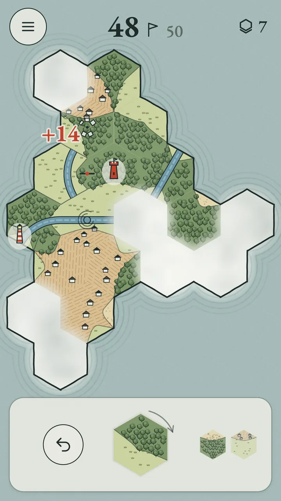

1 per edgeSeams. An edge that meets the same land on the next tile.
1 per edgeShores. A coast or river edge that faces the sea.
×2The ruin. Every seam and shore around the ruin counts double.

Landmarks
Close a forest or a village of three tiles or more and it plants a watchtower or a mill on the spot, worth 3 more.
2 per tileClosed forest. A forest whose every edge meets forest: none faces fog, sea or other land.
3 per tileClosed village. The same rule for villages, and worth more.
2 per tileRiver to the sea. The river from the spring reaches the sea: every tile on it pays, and a lighthouse at its mouth adds 3.
0Fraying. A forest or village edge that faces the sea or other land can never close. Meadow never closes, it only scores seams.